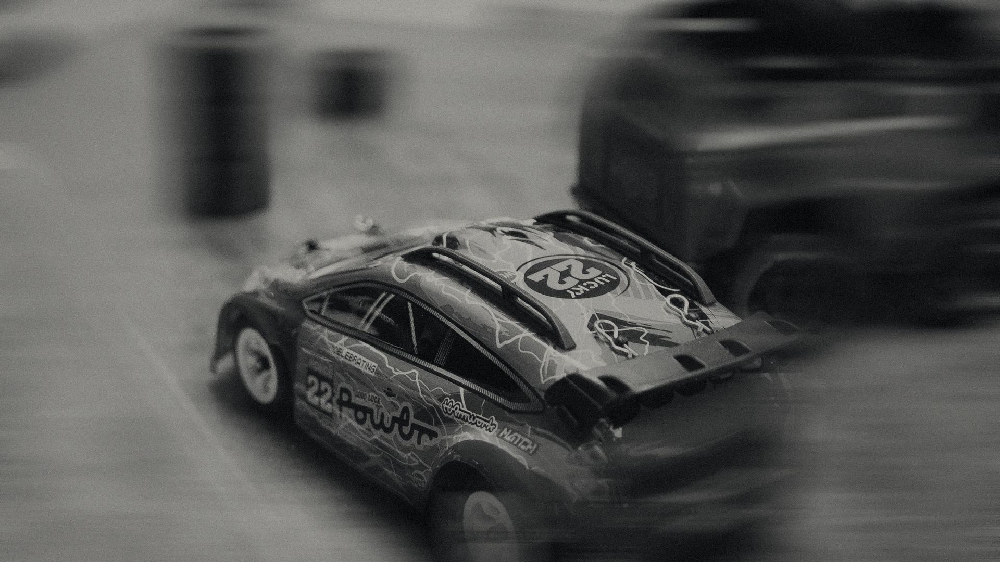
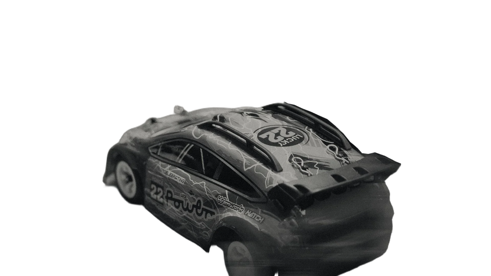
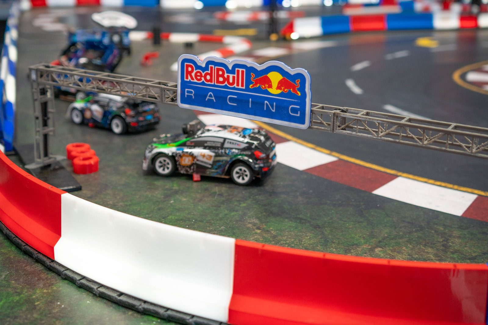

Elige
Selecciona tu coche y tu circuito.


Atracción FPV para centros de ocio
Hasta 6 simuladores, un circuito
Coches RC reales en primera persona
Mejor vuelta 00:42.381
La misma secuencia que ya funciona en la operación real.
Selecciona tu coche y tu circuito.
Cockpit con volante, pedales y pantalla FPV.
Cámara en primera persona, sensación real de pilotaje.
Tiempos de vuelta y posición medidos en directo.
Sesión real, con telemetría en pantalla durante la carrera.

Hasta seis simuladores simultáneos sobre un circuito compartido.
Ninguna otra atracción combina coche real, cámara FPV y cockpit físico sobre un mismo circuito.
El sistema se adapta al espacio disponible, desde una instalación compacta hasta el circuito completo.
Sesiones y competiciones programables: el flujo de clientes no depende de horarios fijos.
Cada sesión genera material visual y conversación. La telemetría y el cronómetro son parte del espectáculo.
Cuéntanos cuántos metros cuadrados, qué altura y qué conexión eléctrica tienes, y te proponemos la configuración que cabe.
Enviar las medidas de mi espacioUbicación, público, fechas y duración.
Trazado, puestos, carrera y personalización.
Transporte, montaje, pruebas y briefing.
Participantes, resultados y contenidos.
El Hormiguero (Antena 3) llevó una carrera de RC Arcade a su programa el 7 de octubre de 2026. El vídeo supera los 6.000 «me gusta» en Instagram.
Carreras gratis contra uno de nuestros pilotos.
Carrera de coches teledirigidos entre David Bustamante y Pablo Motos.
Presentación oficial: pilotaje en primera persona con coches reales.
«¿Dónde hay un circuito de estos?»
«Me invitáis a hacer eso porfa (pago si hace falta)»
«Una auténtica pasada»
Comentarios del público en el vídeo de El Hormiguero. El público ya pregunta dónde probarlo.
El operador incorpora la atracción de forma permanente en su centro de ocio.
Contratación para ferias, activaciones de marca o eventos puntuales.
Liga o ranking entre pilotos. Refuerza la propuesta; no es la puerta de entrada.
Cinco datos bastan para una primera configuración: tipo de espacio o evento, ubicación y fechas, público, duración y nivel de personalización.